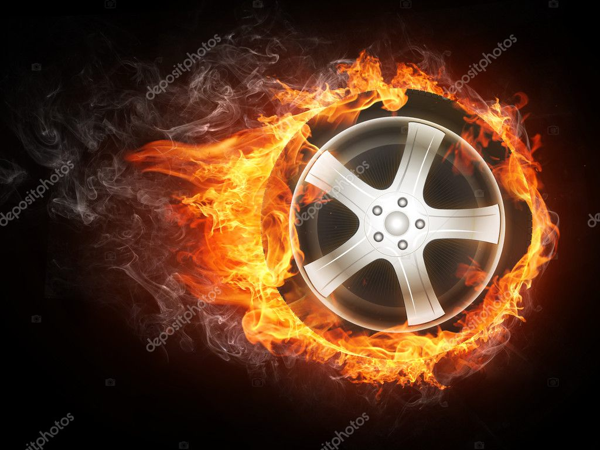

A Linha do Tempo da Nossa Evolução
🔥 Primórdios (Pedra e Fogo)
A origem de tudo. Quando a humanidade decidiu que passar frio e cansaço eram coisas do passado.
📜 Fato: O domínio do fogo permitiu a digestão de proteínas e a proteção contra predadores.
🤣 A Estória: Imagine o primeiro cara a criar uma roda. Os amigos rindo dele até verem que ele não precisava mais carregar mamute nas costas. Quem riu por último?

⚡ A Era da Força (Vapor e Eletricidade)
O momento em que trocamos os cavalos por máquinas de metal que cuspiam fumaça e faíscas.
📜 Fato: A Revolução Industrial transformou vilas em cidades e o trabalho manual em produção em massa.
🤣 A Estória: Foi o fim da "vida mansa" no campo. O mundo começou a correr tão rápido que, se você piscasse, o trem já tinha partido e a lâmpada do Thomas Edison já estava acesa.
🤖 Era Digital (IA e Internet)
O futuro que já chegou! Onde a informação viaja na velocidade da luz e a geladeira fala com você.
📜 Fato: A invenção do microprocessador permitiu que computadores saíssem de salas gigantes para o seu bolso.
🤣 A Estória: Vivemos o sonho (ou pesadelo?) de ter todo o conhecimento humano nas mãos, mas usamos 90% do tempo para ver vídeos de gatinhos e esperar o Windows atualizar.